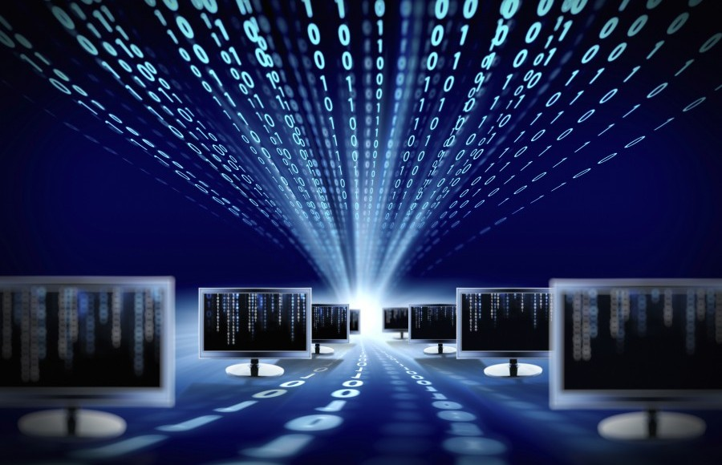

INÍCIO
SOBRE
CONHEÇA
DESENVOLVIMENTO WEB
GOVERNANÇA DE TI
SEGURANÇA DA INFORMAÇÃO
SISTEMA DE INFORMAÇÃO
TÓPICOS EM JOGOS DIGITAIS
TÓPICOS EMERGENTES
CONTATO
O QUE É SISTEMA DE INFORMAÇÃO?
ATIVIDAS ENVOLVIDAS COM SI
EVOLUÇÃO HISTÓRICA
VANTAGENS DO SI
USO NAS EMPRESAS
TIPOS DE SI USADOS EM EMPRESAS
COMO SI'S PODEM SER CLASSIFICADOS
COMO FUNCIONAM?
ERP e SI
O que é sistema de informação?
Sistemas de Informação (SI) é a expressão que descreve um Sistema seja ele SIC (Sistema Informacional Computadorizado) ou manual, que abrange pessoas, máquinas e métodos organizados para coletar, processar, transmitir e disseminar dados que representam informação para o usuário e cliente.
Informações são dados oferecidos de uma forma significativa e útil para os indivíduos. Dados são correntes de fatos brutos que importam eventos que estão ocorrendo nas organizações ou no ambiente físico, antes de terem sido organizados e arranjados de uma forma que as pessoas possam entendê-los e usá-los.
Todo Sistema de Informação que manipula dados e gera informação, usando ou não recursos de tecnologia em computadores, pode ser genericamente considerado como um sistema de informação. Por exemplo, o sistema de informação organizacional pode ser conceituado como a organização e seus vários subsistemas internos, contemplando ainda o meio ambiente externo.
Quais são as atividades envolvidas com SI?
O tipo de trabalho previsto para um Bacharel em Sistemas de Informação é administrar o fluxo de informações geradas e distribuídas por redes de computadores dentro de uma organização. Suas responsabilidades em uma empresa abrangem o planejamento e organização do processamento, armazenamento, recuperação e disponibilização das informações presentes nos sistemas computacionais. Algumas funções relacionadas a suporte aos usuários e infraestrutura tecnológica podem ser algumas responsabilidades. É abrangente em áreas de Ciência da Computação-Software e Engenharia da Computação-Hardware.
No âmbito do desenvolvimento de sistemas (software), o trabalho do Bacharel em Sistemas de Informação inclui gestão de projetos, levantamento de requisitos, análise, especificação, projeto/desenho (no sentido de design) do sistema, programação, testes, homologação, implantação e acompanhamento dos sistemas solicitados pelos seus usuários/clientes.
Evolução Histórica do SI
O Século XX é considerado aquele do advento da Era da Informação. A partir de então, a informação começou a fluir com velocidade maior que a dos corpos físicos. Desde a invenção do telégrafo elétrico em 1837, passando pelos meios de comunicação de massa, e até mais recentemente, o surgimento da grande rede de comunicação de dados que é a Internet, o ser humano tem de conviver e lidar com um crescimento exponencial do volume de dados disponíveis.
Antes da popularização dos computadores, os sistemas de informação nas organizações baseavam-se em técnicas de arquivamento e recuperação de informações de grandes arquivos. Geralmente existia a figura do bibliotecário, que é a pessoa responsável em organizar os dados, registrá-los, catalogá-los e recuperá-los quando necessário.
O domínio da informação disponível é uma fonte de poder, uma vez que permite analisar fatores do passado, compreender o presente, e principalmente, antever o futuro. Os sistemas de informação surgiram antes mesmo da informática.
Vantagens do SI
Em um Sistema, várias partes trabalham juntas visando um objetivo em comum. Em um Sistema de Informação não é diferente, porém o objetivo é um fluxo mais confiável e menos burocrático das informações. Em um Sistema de Informação bem construído, suas principais vantagens são:
Redução de custos operacionais e administrativos e ganho de produtividade;
Mais integridade e confiabilidade da informação;
Mais estabilidade;
Mais segurança de acesso à informação;
Otimização do fluxo de informação permitindo mais agilidade e organização;
Informações de melhor qualidade, essenciais para uma boa tomada de decisão.
Observações: Um Sistema de Informação não precisa ter essencialmente computadores envolvidos, basta ter várias partes trabalhando entre si para gerar informações.
Ele pode ser tanto manual quanto baseado em TI, ou uma mescla dos dois. Acontece que um Sistema de Informação grande, dificilmente sobrevive atualmente sem estar informatizado, o que por si só,não elimina o fator humano no processo. É a interação dos componentes da TI com o componente humano que faz com que um Sistema de Informação tenha funcionalidade e utilidade para a organização.
Uso nas empresas
Na escala das organizações, a informação é um fator decisivo na gestão por ser um recurso importante e indispensável tanto no contexto interno como no relacionamento com o exterior. Quanto mais viável, oportuna e exaustiva for essa informação, mais coesa será a empresa e maior será o seu potencial de resposta às solicitações da concorrência. Alcançar este objectivo depende, em grande parte, do reconhecimento da importância da informação e do aproveitamento das oportunidades oferecidas pela tecnologia para orientarem os problemas enraizados da informação.
A revolução da Informação exige, assim, mudanças profundas no modo como vemos a sociedade na organização e sua estrutura, o que se traduz num grande desafio: aproveitar as oportunidades, dominando os riscos inerentes ou submeter-se aos riscos com todas as incertezas que acarretam.
Na chamada Sociedade de Informação, esta possui um efeito multiplicador que dinamizará todos os setores da economia, constituindo, por sua vez, a força motora do desenvolvimento político, econômico, social, cultural e tecnológico.
Tipos de SI usados em empresas
Numa organização existe um componente que suporta o fluxo de informação tanto internamente como com o exterior. O sistema de informação existe numa organização não como um subsistema isolado, mas como uma rede dispersa pelos diversos componentes do sistema. Pela sua importância, os sistemas de informação são tomados como um subsistema estratégico.
Os principais tipos sistemas de informação nas empresas são:
1. Sistema de processamento de transações (SPT): Sistemas de informação que supervisionam as atividades elementares e as transações da organização. Têm a função de realizar e registrar as transações e informações necessárias para funcionamento da organização.
2. Sistemas de informações gerenciais (SIG): desenvolve relatórios sobre o desempenho atual da organização, permitindo monitorar e controlar a empresa e até mesmo prever o seu desempenho futuro.
3. Sistema de apoio à decisão (SAD): sistema que foca em problemas únicos alterando-se com rapidez e que não possui procedimentos de resoluções pré-definidos. Esse sistema utiliza informações obtidas pelo SPT e SIG e também informações externas que auxiliaram na análise e na resolução do problema.
4. Sistema de apoio ao executivo (SAE - SIE em inglês): auxilia a gerência com a apresentação de gráficos e dados de diversas fontes através de uma interface de fácil manuseio. Estes sistemas são projetados para incorporar dados sobre eventos externos, como novas leis ou novos concorrentes, utilizando também informações do SIG e do SAD internos.
Como SI's podem ser classificados?
Sistemas de Informação Gerencial (SIG): agrupam e sintetizam os dados das operações da organização para facilitar a tomada de decisão pelos gestores da organização;
Sistemas de Informação Estratégicos (BI - Business Intelligence): integram e sintetizam dados de fontes internas e externas à organização, utilizando ferramentas de análise e comparação complexas, simulação e outras facilidades para a tomada de decisão da cúpula estratégica da organização.
Sistemas de Informação Comerciais/Negociais (Customer relationship management — CRM): referem-se ao processo de coleta, análise, compartilhamento e monitoramento de informações que oferecem suporte à gestão de negócios de uma organização, tanto em relação ao comércio e colaboração com outras empresas, como ao atendimento direto com o cliente.

Como funcionam sistemas de informação?
Como qualquer outro sistema, o SI inclui a entrada (input) que envolve a captação ou coleta de fontes de dados brutos de dentro da empresa ou de um ambiente externo. O processamento envolve a conversão dessa entrada bruta em uma forma mais útil e apropriada. A saída (output) envolve a transferência de informação processada às pessoas ou atividades que a usarão (processa os inputs e produz outputs, que são enviados para o usuário ou para outro sistema).Podem conter também um mecanismo de feedback que controla a operação.
Um SI pode ser dividido em 3 partes:
Entrada que recebe todos os problemas e dados da empresa, como dados, informações,regra de negócios, todos eles podem ser interno ou externo (jornais, revistas, pesquisa) (este se enquadra como um SI de Business Intelligence — BI)
Processamento / Controle que faz todo o processamento para transformar esses dados, informações e regra de negócios em informação.
Saída que gera os resultados para que possa dar um suporte na tomada de decisões gerenciais da empresa.
Entrada fornece: Dados; Informação; Regras de negócio;
Processamento/Controle fornece: Tomadores de decisão; Auto Controle;
Saída fornece: Relatórios; Gráficos; Cálculos; Táticas;
ERP e SI
ERP é uma sigla derivada do nome Enterprise Resource Planning que, traduzido ao pé da letra, significa “Planejamento dos recursos da empresa”, e sistemas de informação que integram todos os dados e processos de uma organização em um único sistema. A integração pode ser vista sob a perspectiva funcional / departamental (que são os sistemas de Finanças, Contabilidade, Recursos Humanos, Processos de fabricação, Marketing, Vendas, Compras, Comercial…) e sob a perspectiva sistêmica/ gerencial (que são os sistemas de Processamento de Transações, Sistemas de Informações Gerenciais, Sistemas de Apoio à Decisão, entre outros).
Falando de maneira geral o ERP é uma plataforma de software desenvolvida para integrar os diversos departamentos de uma empresa, possibilitando assim a automação, otimização dos processos e o armazenamento seguro de todas as informações de negócios em um mesmo lugar (Banco de Dados).